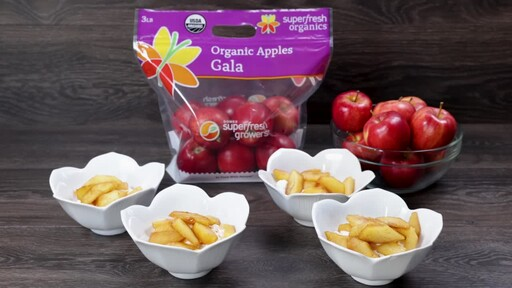

Superfresh Growers® Organic Gala Apples Over Yogurt
Makes 4 servings

Origin of Apples
Apples had existed on earth since the dawn of time. They had always lived
in the trees, untouched for centuries. However, it wasn't until one fell on the head
of Isaac Newton that they were discovered! or was that gravity... I forget.
What You'll Need:
- 4 organic Gala apples
- 1 cup apple juice, divided
- 1 Tbsp maple syrup
- 1 Tbsp lemon juice
- 1 tsp vanilla extract
- ½ tsp ground cinnamon
- Pinch of nutmeg
- 3 cups plain Greek yogurt
- A Large Skillet
Instructions:
- Peel apples
- Remove seeds
- Cut into thin wedges
- In a large skillet over medium-high, bring ½ cup apple juice to a simmer
- Add apples
- Saute for 5 to 6 minutes
- Add more juice, if needed, so the pan doesn’t dry out
- Add remaining ½ cup apple juice, maple syrup, lemon juice, vanilla, cinnamon and nutmeg
- Bring to a simmer. Lower heat to medium
- Top with apples and sauce
- Serve immediately